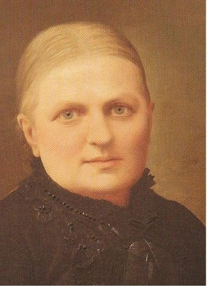
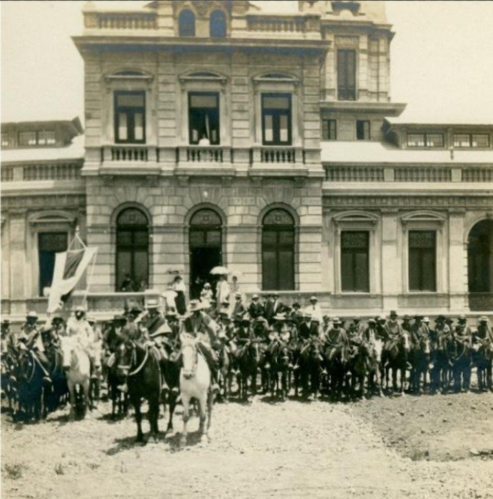
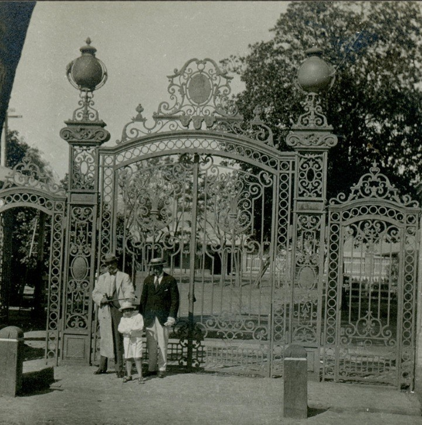
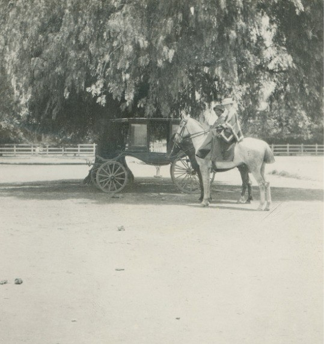
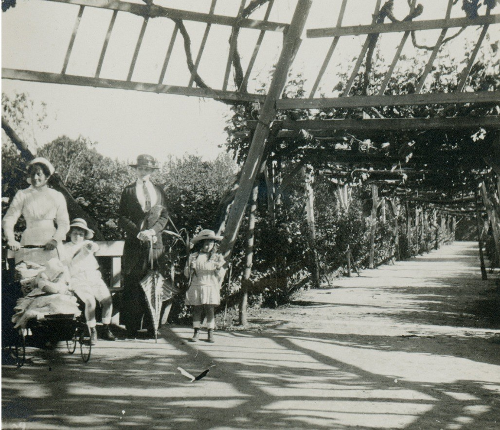
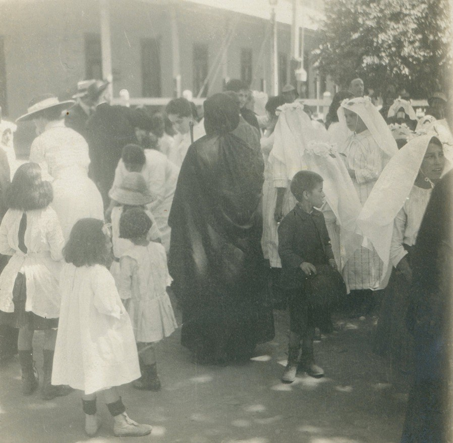
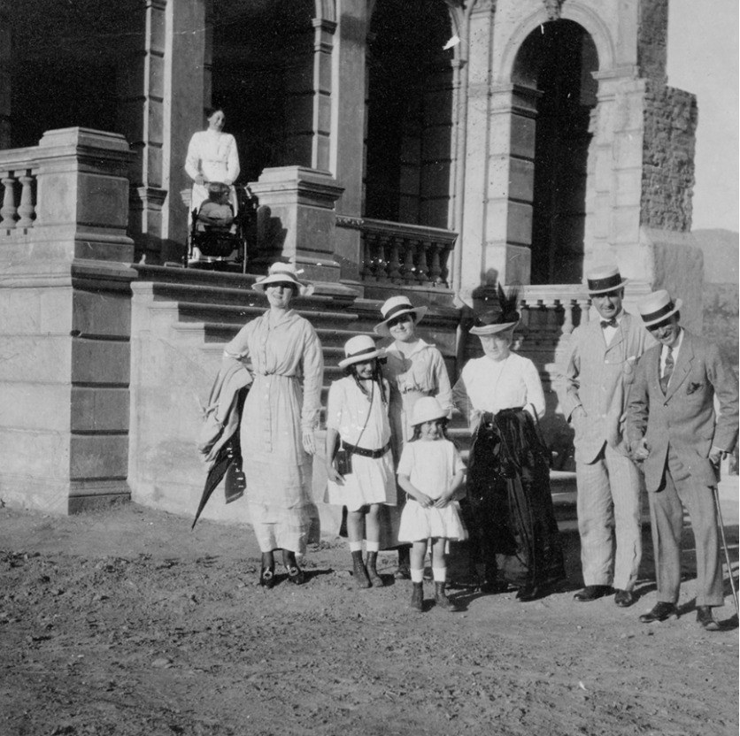

La hacienda
Fue una propiedad agrícola relevante, con actividades vinculadas a viñedos, cáñamo, ganado, trabajo rural y redes productivas que contribuyeron al desarrollo económico de San Felipe.
Itinerario de memoria patrimonial
Investigación patrimonial sobre el antiguo “Versalles Chileno”, su arquitectura, vida hacendal, transformaciones históricas y vigencia como espacio de memoria en San Felipe.
Figura histórica
La historia del Palacio Hacienda Quilpué se vincula con la familia Edwards Ross y, especialmente, con Juana Ross Edwards. Su filantropía se expresó en hospitales, escuelas, iglesias, asilos y programas de ayuda social. Durante la epidemia del cólera, su respuesta articuló recursos sanitarios y asistencia para la comunidad y para los trabajadores de la hacienda.

Nacida en La Serena en 1830, su figura permite vincular la historia arquitectónica del palacio con redes de filantropía, beneficencia y apoyo social durante el siglo XIX. El retrato funciona aquí como punto de entrada a una lectura patrimonial donde familia, territorio y memoria pública convergen.
Fue una propiedad agrícola relevante, con actividades vinculadas a viñedos, cáñamo, ganado, trabajo rural y redes productivas que contribuyeron al desarrollo económico de San Felipe.
Su influencia política, económica y social marcó tanto la historia del inmueble como diversas obras de beneficencia en Chile.
La cercanía con la línea férrea fortaleció la conexión territorial y la comercialización de productos agrícolas del Valle del Aconcagua.
Marco conceptual
El patrimonio corresponde al conjunto de bienes, lugares, tradiciones y conocimientos que una comunidad reconoce como parte de su historia e identidad. Su comprensión no se limita a lo monumental: también integra memorias, vínculos sociales, prácticas cotidianas y modos de habitar un territorio.
En el caso del Palacio Hacienda Quilpué, el valor patrimonial se expresa tanto en la arquitectura remanente como en las historias asociadas al trabajo rural, la familia Edwards Ross, la transformación de las haciendas y la memoria actual de San Felipe.
Archivo visual
Registros fotográficos asociados al periodo de esplendor del inmueble permiten observar el acceso, la fachada, los jardines, la sociabilidad familiar y las prácticas religiosas vinculadas al recinto.






Proceso histórico
La línea de tiempo sitúa el palacio dentro de un proceso mayor: la formación de San Felipe, el auge agrícola del Valle del Aconcagua, la filantropía de Juana Ross Edwards, el esplendor del inmueble y su posterior transformación en ruina patrimonial.
El Valle del Aconcagua se consolida como territorio agrícola y ganadero, con haciendas que organizan producción, residencia, servicios y vida comunitaria.
Propiedades como Lo Vicuña, El Tártaro y Quilpué consolidan el prestigio social y económico de sus propietarios y configuran el paisaje rural regional.
Nace una figura central para la historia del palacio, reconocida por su vocación religiosa, filantrópica y de servicio social.
Juan Eduardo Fehrman proyecta una residencia de inspiración francesa, excepcional para el contexto rural del Valle del Aconcagua.
Juana Ross organiza ayuda sanitaria y social mediante lazaretos, alimentos, ropa, medicamentos y atención para trabajadores e inquilinos.
La residencia recibe visitas internacionales y consolida su imagen pública como el “Versalles Chileno”, asociada a suntuosidad, jardines y sociabilidad aristocrática.
La propiedad pasa al Estado de Chile y se proyecta como centro de formación para Agronomía, iniciativa interrumpida en 1973.
Tras daños estructurales se retiran techumbre, chimeneas y parte de la estructura interior; luego desaparecen pisos, vigas, pilares y mobiliario.
Las ruinas permanecen como testimonio patrimonial de San Felipe y del Valle del Aconcagua, acogiendo actividades culturales y comunitarias.
Arquitectura y territorio
Su diseño monumental incorporó una organización espacial inspirada en modelos residenciales europeos de fines del siglo XIX.
El palacio contó con salones amplios, dependencias de servicio, habitaciones y áreas destinadas a recepción y sociabilidad.
Los jardines, senderos y el espejo de agua reforzaban la puesta en escena del edificio y su relación con el paisaje.
Quilpué operó como centro agrícola vinculado a viñedos, cáñamo, trabajo rural y redes económicas regionales.
“Versalles Chileno” fue la denominación con que se reconoció la singularidad del palacio: una arquitectura de inspiración europea emplazada en un territorio profundamente agrícola.
Patrimonio y memoria
Tras décadas de uso, abandono, daños estructurales y demolición parcial, las ruinas constituyen el principal remanente material de una de las residencias más relevantes del Valle del Aconcagua.
Lectura ampliada
Esta sección reúne antecedentes complementarios del resumen de la investigación para profundizar en la construcción, la vida hacendal, el territorio y la transformación patrimonial del inmueble.
La construcción del Palacio Hacienda Quilpué comenzó en 1866 por encargo de Juana Ross Edwards. El arquitecto Juan Eduardo Fehrman desarrolló una residencia de marcada influencia francesa, con amplios espacios interiores, ornamentación detallada y una organización espacial excepcional para el contexto rural del Valle del Aconcagua.
El inmueble llegó a contar con más de cien habitaciones distribuidas en sectores destinados a vida familiar, administración, servicio y recepción de invitados. Sus salones principales fueron concebidos para reuniones de importancia, reforzando la imagen de prestigio, exclusividad y sociabilidad aristocrática.
La Hacienda Quilpué fue una propiedad agrícola relevante, vinculada al cultivo de viñedos, cereales y cáñamo. Su funcionamiento articulaba propietarios, administradores, trabajadores agrícolas, personal doméstico y redes productivas que contribuyeron al desarrollo económico de San Felipe.
El emplazamiento del palacio en San Felipe, dentro del Valle del Aconcagua, favoreció su integración con rutas agrícolas y vías de comunicación. La cercanía con la red ferroviaria facilitó el transporte de productos, la movilidad de personas y la conexión con otros centros urbanos del país.
Entre 1886 y 1888, durante la epidemia del cólera, Juana Ross Edwards impulsó acciones de ayuda mediante lazaretos, alimentos, abrigo, medicamentos y atención médica. Esta asistencia alcanzó tanto a la población del valle como a trabajadores e inquilinos de la hacienda.
Tras el cese de sus funciones originales, el palacio inició un proceso de abandono y deterioro material. La demolición parcial y la pérdida de elementos constructivos transformaron el inmueble en ruina, pero también consolidaron su condición de testimonio patrimonial y espacio de memoria colectiva.
Síntesis interpretativa
La lectura patrimonial del Palacio Hacienda Quilpué permite identificar relaciones entre arquitectura, vida hacendal, acción social y memoria territorial.
El palacio expresa la relación entre monumentalidad arquitectónica, prestigio familiar y organización productiva del territorio agrícola.
El estado actual del inmueble permite leer procesos de esplendor, abandono, deterioro material y persistencia de la memoria local.
La figura de Juana Ross Edwards vincula la historia del palacio con prácticas de beneficencia, asistencia sanitaria y compromiso comunitario.
La hacienda se comprende en relación con San Felipe, el Valle del Aconcagua, las rutas agrícolas y la articulación ferroviaria regional.